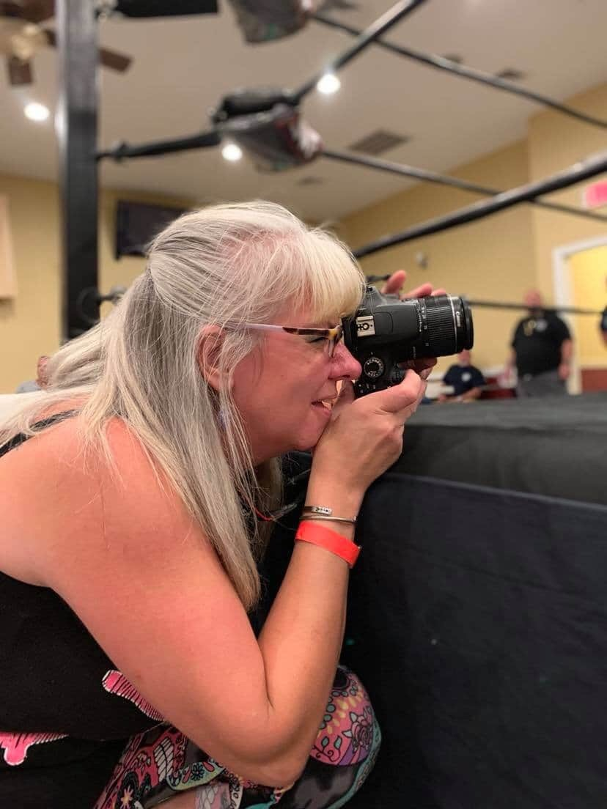
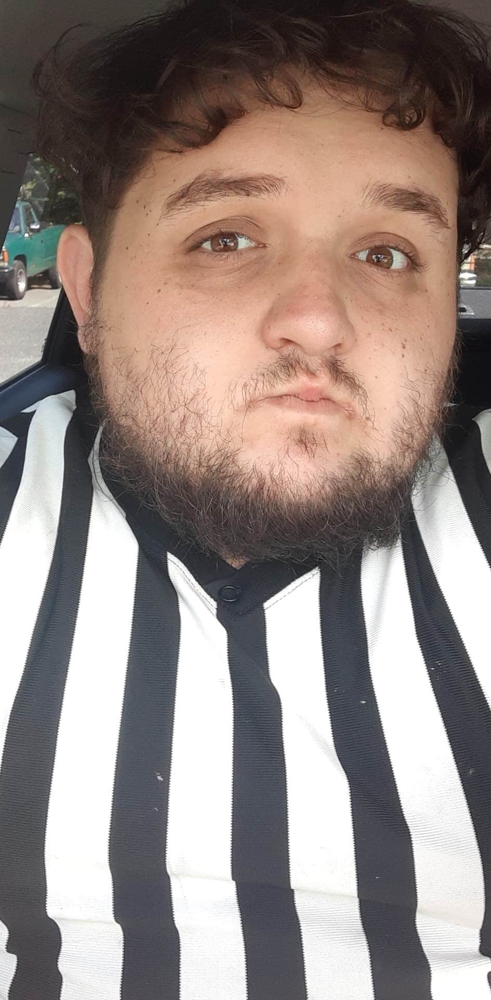
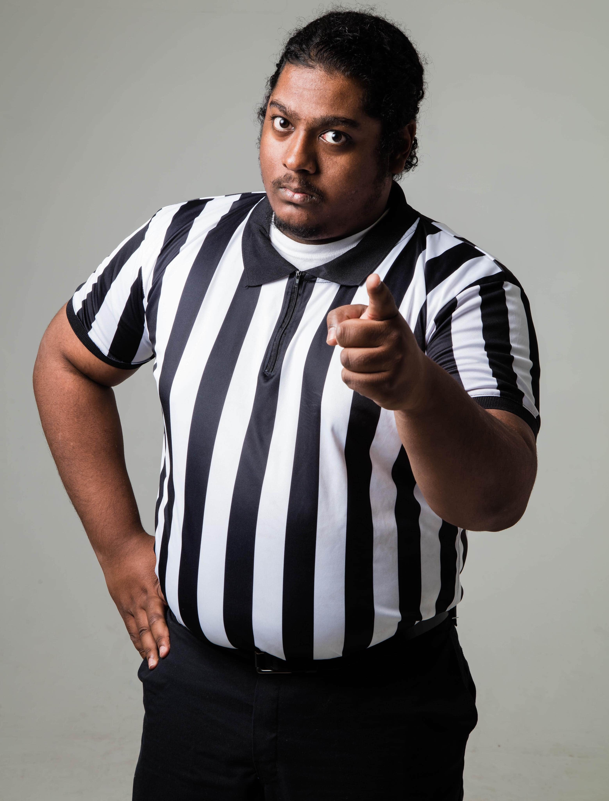

LTW Teams and Managements

Kim Falzarano
Nickname:"The Mominator"
Weight:Changes Daily
Hometown:Bayville, NJ
Occupation:Lead Photographer
Kim loves wrestling but way too old to do it. She does her work behind camera. She's been taking pictures since she could hold one up. Kim's pictures have been used numerous time on Facebook profile pics and in many hilarious memes. You can check out her amazing pictures in the Photos page, featuring your favorite LTW stars!

Sterling Silver
Height:5'9"
Weight:263lbs.
Hometown:Barnegat, NJ
Occupation:Head Official Referee
Sterling's job duties is to make sure that wrestlers have clean head to head matches with no interference, as well as making sure that our talent is safe. Sterling says that working for LTW is life changing experience that he wouldn't trade for aything. He get to be a huge part of the business that he love around people that feel the same way.

Alfred Stevens
Hometown:Brookyln, NY
Occupation:Referee
Alfred Stevens is a no nonsense refree for LTW. Calling it right down the middle, Alfred does not take anything from anyone. A true student and admirer of the sport, he brings an integrity to the role of officiating and has developed and maintained a remarkable reputation in his many years of refereeing wrestling matches including many of which haved featured LTW stars throughout his time as an official.
TANK
Height:6'4"
Weight:Ryno
Hometown:Battle Ground, WA
Occupation:Graphic/Logo Designer
TANK is LTW offical graphic and logo designer for LTW talent and other wrestlers throughout the country including Ace Marxman, Ring of Honor star Matt Taven, KC Navarro, Lui Lindo, Lou Bruno, stars from GTS Wrestling, and among others. You may not noticed about Tank. Before he was a designer, he was a wrestler as well. He has a powerful movesets includes a sitdown powerbomb which he calls, "The Detroyer", and a crossface, which he called it "Abrams Clutch". You never know when you see him competing in the ring and knocking down every competitor. You can also support his clothing line, Caged RYNO, by order his merchandise at TeeSpring.
Deoshai Patterson
Nickname:"Deo the Lion"
Height:5'7"
Weight:185lbs.
Hometown:Charleston, SC
Occupation:Internet Promotional Manager
Deoshai's (AKA "Deo") duties is to promote LTW events, products and services throughout the Internet including social media (Facebook, Twitter, and Instagram), YouTube, and right here on the LTW website. Deoshai's thoughts of working with LTW is like a new experience in his life. Being as a wrestling fan for over 20 plus years, Deoshai has grown to love professional wrestling now in more depth of a business perspective. He describes wrestling as an "escapism to society." He is genuinely proud to make LTW his new home, full with wrestlers, which now he called them as family.